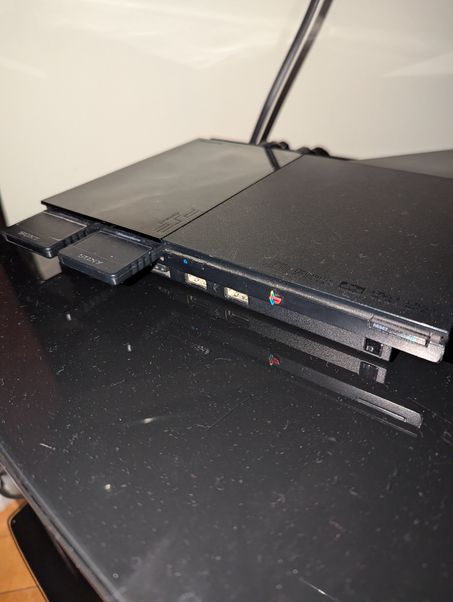
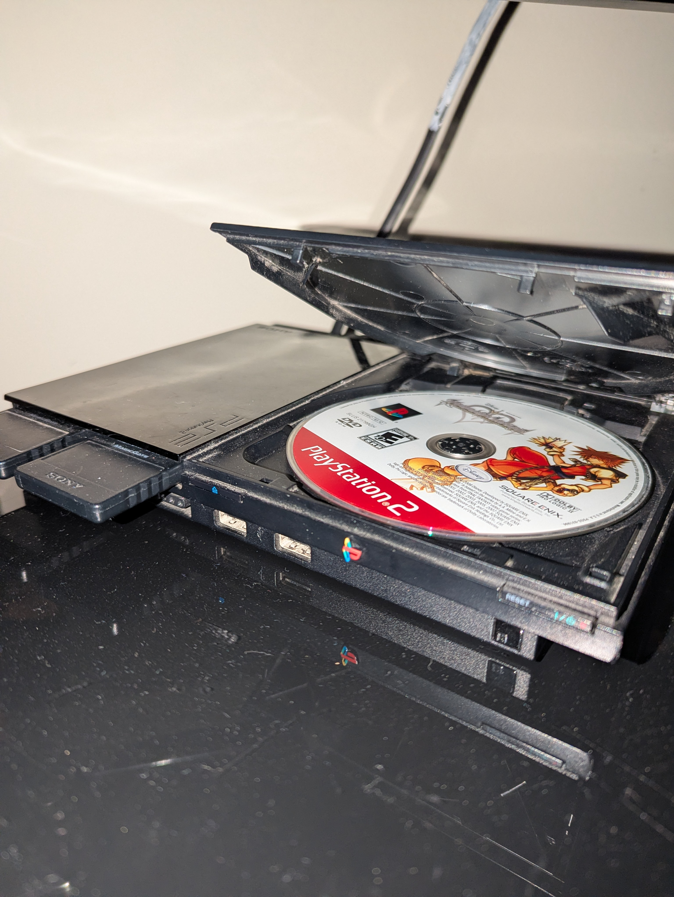
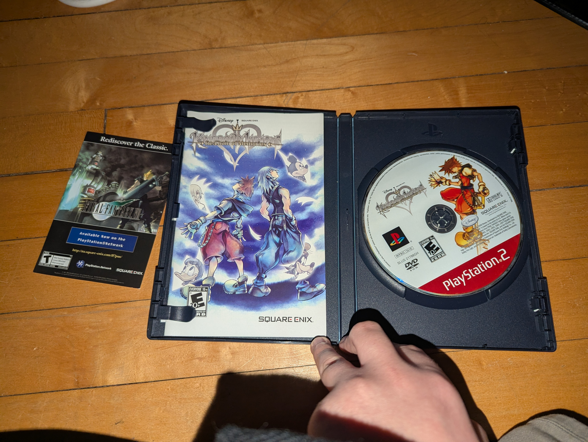

Fig. 2-1: Here is the console. I have three typical controllers and a modified controller for it, but none are plugged into the console in this image. Both of the memory cards have 8MB installed.

Fig. 2-2: This is where the disc goes in.

Fig. 2-3: Here is one of four games I have for the PS2.Fig. 2-4: Here is a modified controller for the PS2. It claims to be a Dual Charger, and supports Turbo buttons, Slow (whatever that means), and Analog to D-Pad inversion.